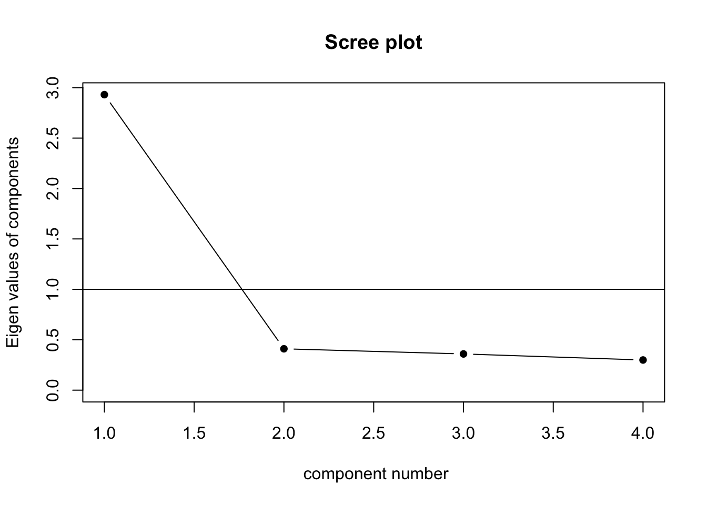

library("MPsychoR")
data("YouthDep")
item1 <- YouthDep[, 1]
levels(item1) <- c("0", "1", "1")
item2 <- YouthDep[, 14]
levels(item2) <- c("0", "1", "1")
table(item1, item2) item2
item1 0 1
0 1353 656
1 115 166Pearson product-moment correlation:
\[ r_{xy} = \frac{\Sigma_{n=1}^n (x_k - \bar{x})(y_i - \bar{y})}{\sqrt{\Sigma_{n=1}^n(x_i - \bar{x})^2} \sqrt{\Sigma_{n=1}^n(y_i - \bar{y})^2}} = \frac{s_{xy}}{s_x s_y}. \]
The equation looks very daunting, until you see that it is just the covariance of \(x\) and \(y\) divided by the product of their standard deviations.
library("MPsychoR")
data("YouthDep")
item1 <- YouthDep[, 1]
levels(item1) <- c("0", "1", "1")
item2 <- YouthDep[, 14]
levels(item2) <- c("0", "1", "1")
table(item1, item2) item2
item1 0 1
0 1353 656
1 115 166## ------ correlation coefficients
library("psych")
tetcor <- tetrachoric(cbind(item1, item2))tetcorCall: tetrachoric(x = cbind(item1, item2))
tetrachoric correlation
item1 item2
item1 1.00
item2 0.35 1.00
with tau of
item1 item2
1.16 0.36 item1 <- YouthDep[, 1]
item2 <- YouthDep[, 14]
polcor <- polychoric(cbind(item1, item2))
polcorCall: polychoric(x = cbind(item1, item2))
Polychoric correlations
item1 item2
item1 1.00
item2 0.33 1.00
with tau of
1 2
item1 1.16 2.3
item2 0.36 1.2draw.tetra(r = .35, t1 = 1.16, t2 = .36)
DepItems <- YouthDep[,1:26]
Depnum <- data.matrix(DepItems) - 1 ## convert to numeric
Rdep <- polychoric(Depnum)What do you do when you have a large number of variables you are considering as predictors of a dependent variable?
What if you are developing a measurement scale and have a large number of items you think measure the same construct
Principal Components Analysis
Factor Analysis
The principal components partition the total variance (the sum of the variances of the original variables) by finding the linear combination of the variables that account for the maximum amount of variance:
\[ PC1 = a_{11}x_1 + a_{12}x_2 ... a_{1p}x_p, \] This is repeated as many time as there are variables.
draw pretty pictures on the board
Eigenvalues represent the variance in the variables explained by the success components.
lower <- "
1.00
0.70 1.00
0.65 0.66 1.00
0.62 0.63 0.60 1.00
"
cormat <- getCov(lower, names = c("d1", "d2", "d3", "d4"))
cormat d1 d2 d3 d4
d1 1.00 0.70 0.65 0.62
d2 0.70 1.00 0.66 0.63
d3 0.65 0.66 1.00 0.60
d4 0.62 0.63 0.60 1.00Retain factors with eigenvalues greater than 1
eigen(cormat)$values[1] 2.9311792 0.4103921 0.3592372 0.2991916scree(cormat, factors = FALSE)
fa.parallel(cormat, fa = "pc")
Parallel analysis suggests that the number of factors = NA and the number of components = 1 fa.parallel(Harman74.cor$cov, fa = "pc")
Parallel analysis suggests that the number of factors = NA and the number of components = 2 Essentially reallocates the loadings. The first factor may not be the one accounting for the most variance.
Quartimax - idea is to clean up the variables. Rotation done so each variable loads mainly on one factor. Problematic if there is a general factor on which most or all variables load on (think IQ).
Varimax - to clean up factors. So each factor has high correlation with a smaller number of variables, low correlation with the other variables. Generally makes interpretation easier.
When orthogonal rotation is used interpret structural coefficients (but they are the same as pattern coefficients).
When oblique rotation is used pattern coefficients are preferred because they account for the correlation between the factors and they are parameters of the correlated factor model (which we will discuss next class).
Let’s look at some examples
“Little Jiffy” method of factor analysis
| Dimension | Derivation |
|---|---|
| Thickness | x |
| Width | y |
| Length | z |
| Volume | xyz |
| Density | d |
| Weight | xyzd |
| Surface area | 2(xy + xz + yz) |
| Cross-section | yz |
| Edge length | 4(x + y + z) |
| Diagonal length | (x^2) |
| Cost/lb | c |
'data.frame': 63 obs. of 11 variables:
$ thick : num 1.362 2.385 3.101 0.934 0.845 ...
$ width : num 1.71 2.83 4.32 3.2 3.84 ...
$ length : num 2.93 5.01 5.99 4.15 4.09 ...
$ volume : num 6.02 30.2 72.01 11.78 16.1 ...
$ density : int 10 7 16 22 11 16 11 21 6 13 ...
$ weight : num 60 210 1152 264 176 ...
$ surface : num 22 62.1 108.2 38 48 ...
$ crosssec: num 5.87 15.06 23.53 12.02 16.13 ...
$ edge : num 23.9 39.9 51.5 31.9 36.1 ...
$ diagonal: num 196 1444 3721 676 1089 ...
$ cost : num 4.48 2.37 9.77 22.21 15.86 ...| thick | width | length | volume | density | weight | surface | crosssec | edge | diagonal | cost | |
|---|---|---|---|---|---|---|---|---|---|---|---|
| thick | 1.00 | 0.49 | 0.24 | 0.84 | -0.13 | 0.59 | 0.74 | 0.46 | 0.61 | 0.51 | -0.02 |
| width | 0.49 | 1.00 | 0.61 | 0.77 | -0.15 | 0.55 | 0.87 | 0.92 | 0.88 | 0.78 | 0.03 |
| length | 0.24 | 0.61 | 1.00 | 0.58 | -0.02 | 0.45 | 0.72 | 0.83 | 0.84 | 0.86 | -0.02 |
| volume | 0.84 | 0.77 | 0.58 | 1.00 | -0.22 | 0.65 | 0.97 | 0.81 | 0.87 | 0.85 | -0.11 |
| density | -0.13 | -0.15 | -0.02 | -0.22 | 1.00 | 0.44 | -0.20 | -0.15 | -0.15 | -0.18 | 0.62 |
| weight | 0.59 | 0.55 | 0.45 | 0.65 | 0.44 | 1.00 | 0.65 | 0.56 | 0.61 | 0.57 | 0.24 |
| surface | 0.74 | 0.87 | 0.72 | 0.97 | -0.20 | 0.65 | 1.00 | 0.92 | 0.97 | 0.91 | -0.07 |
| crosssec | 0.46 | 0.92 | 0.83 | 0.81 | -0.15 | 0.56 | 0.92 | 1.00 | 0.96 | 0.93 | -0.03 |
| edge | 0.61 | 0.88 | 0.84 | 0.87 | -0.15 | 0.61 | 0.97 | 0.96 | 1.00 | 0.92 | -0.04 |
| diagonal | 0.51 | 0.78 | 0.86 | 0.85 | -0.18 | 0.57 | 0.91 | 0.93 | 0.92 | 1.00 | -0.12 |
| cost | -0.02 | 0.03 | -0.02 | -0.11 | 0.62 | 0.24 | -0.07 | -0.03 | -0.04 | -0.12 | 1.00 |

Loadings:
RC1 RC3 RC2 RC5 RC4
thick 0.968
width 0.734
length 0.986
volume 0.754
density 0.864
weight
surface 0.703
crosssec 0.829
edge 0.819
diagonal 0.875
cost 0.955
RC1 RC3 RC2 RC5 RC4
SS loadings 4.425 2.662 1.318 1.225 1.106
Proportion Var 0.402 0.242 0.120 0.111 0.101
Cumulative Var 0.402 0.644 0.764 0.876 0.976
Loadings:
RC1 RC3 RC2
thick 0.947
width 0.801
length 0.936
volume 0.744
density 0.930
weight
surface 0.792
crosssec 0.942
edge 0.892
diagonal 0.905
cost 0.841
RC1 RC3 RC2
SS loadings 5.298 2.699 1.868
Proportion Var 0.482 0.245 0.170
Cumulative Var 0.482 0.727 0.897## ----------------------- Chapter 2: Factor Analysis ------------------
library("MPsychoR")
data("YouthDep")
item1 <- YouthDep[, 1]
levels(item1) <- c("0", "1", "1")
item2 <- YouthDep[, 14]
levels(item2) <- c("0", "1", "1")
table(item1, item2)
## ------ correlation coefficients
library("psych")
tetcor <- tetrachoric(cbind(item1, item2))
tetcor
item1 <- YouthDep[, 1]
item2 <- YouthDep[, 14]
polcor <- polychoric(cbind(item1, item2))
polcor
DepItems <- YouthDep[,1:26]
Depnum <- data.matrix(DepItems) - 1 ## convert to numeric
Rdep <- polychoric(Depnum)
data("Rmotivation")
vind <- grep("ext|int", colnames(Rmotivation))
Rmotivation1 <- Rmotivation[, vind]
Rmot1 <- tetrachoric(Rmotivation1, smooth = FALSE)
tail(round(eigen(Rmot1$rho)$values, 3))
Rmot <- tetrachoric(Rmotivation1)
tail(round(eigen(Rmot$rho)$values, 3))
## ----- exploratory factor analysis
motFA <- fa(Rmot$rho, nfactors = 2, rotate = "none", fm = "ml")
print(motFA$loadings, cutoff = 0.2)
round(motFA$communality, 2)
motFA2 <- fa(Rmot$rho, nfactors = 2, rotate = "varimax", fm = "ml")
plot(motFA$loadings, asp = 1, xlim = c(-0.2, 0.9), ylim = c(-0.5, 0.9), type = "n", xlab = "Factor 1", ylab = "Factor 2", main = "Loadings Plot")
text(motFA$loadings, labels = rownames(motFA$loadings), cex = 0.8, col = "gray")
abline(h = 0, v = 0, col = "lightgray", lty = 2)
text(motFA2$loadings, labels = rownames(motFA2$loadings), col = 1, cex = 0.8)
legend("bottomleft", legend = c("rotated", "unrotated"), col = c("black", "gray"), pch = 19)
Rmot2 <- tetrachoric(Rmotivation[,1:36])
motFA3 <- fa(Rmot2$rho, nfactors = 3, rotate = "oblimin", fm = "ml")
motFA3$loadings
round(motFA3$Phi, 3)
motFA2 <- fa(Rmotivation1, nfactors = 2, rotate = "varimax", cor = "tet", fm = "ml", scores = "regression",
missing = TRUE, impute = "median")
dim(motFA2$scores)
Rdep <- polychoric(Depnum)$rho
evals <- eigen(Rdep)$values
scree(Rdep, factors = FALSE)
(evals/sum(evals)*100)[1:2]
set.seed(123)
resPA <- fa.parallel(Depnum, fa = "pc", cor = "poly", fm = "ml")
resvss <- vss(Rdep, fm = "ml", n.obs = nrow(Depnum), plot = FALSE)
resvss
fadep <- fa(Depnum, 1, cor = "poly", fm = "ml")
summary(fadep)
resnf <- nfactors(Depnum, n = 8, fm = "ml", cor = "poly")
resnf
## ----- Bayesian exploratory factor analysis
library("MPsychoR")
library("corrplot")
library("BayesFM")
data("Privacy")
Privstd <- scale(Privacy)
corrplot(cor(Privstd))
Nid <- 2 ## minimum number of variables per factor
pmax <- trunc(ncol(Privstd)/Nid) ## maximum number of factors
pmax
set.seed(123)
Rsim <- simul.R.prior(pmax, nu0 = pmax + c(1, 2, 5, 7, 10))
plot(Rsim)
Ksim <- simul.nfac.prior(nvar = ncol(Privstd), Nid = Nid, Kmax = pmax, kappa = c(.1, .2, .5, 1))
plot(Ksim)
set.seed(222)
fitbefa <- befa(Privstd, Nid = 2, Kmax = pmax, nu0 = 10, kappa = 0.2, kappa0 = 0.1, xi0 = 0.1,
burnin = 5000, iter = 50000)
fitbefa <- post.column.switch(fitbefa) ## column reordering
fitbefa <- post.sign.switch(fitbefa) ## sign switching
sumbefa <- summary(fitbefa)
## ----- confirmatory factor analysis
library("MPsychoR")
library("lavaan")
data("Rmotivation")
vind <- grep("ext|int", colnames(Rmotivation)) ## ext/int items
Rmot <- na.omit(Rmotivation[, vind])
mot_model <- '
extrinsic =~ ext1 + ext2 + ext3 + ext4 + ext5 + ext6 +
ext7 + ext8 + ext9 + ext10 + ext11 + ext12
intrinsic =~ int1 + int2 + int3 + int4 + int5'
fitMot <- lavaan::cfa(mot_model, data = Rmot, ordered = names(Rmot))
library("semPlot")
semPaths(fitMot, what = "est", edge.label.cex = 0.7, edge.color = 1, esize = 1, sizeMan = 4.5, asize = 2.5,
intercepts = FALSE, rotation = 4, thresholdColor = "red", mar = c(1, 5, 1.5, 5), fade = FALSE, nCharNodes = 4)
inspect(fitMot, what = "est")$theta
inspect(fitMot, what = "est")$lambda
inspect(fitMot, what = "std")$lambda
inspect(fitMot, what = "est")$psi
inspect(fitMot, what = "std")$psi
parameterEstimates(fitMot, standardized = TRUE)
summary(fitMot, standardized = TRUE, fit.measures = TRUE)
parameterEstimates(fitMot)[5,]
mot_model2 <- '
extrinsic =~ ext1 + ext2 + ext3 + ext4 + ext6 + ext7 +
ext8 + ext9 + ext10 + ext11 + ext12
intrinsic =~ int1 + int2 + int3 + int4 + int5'
fitMot2 <- lavaan::cfa(mot_model2, data = Rmot, ordered = names(Rmot)[-5])
vind <- c(1:4, 13:16, 32:35)
Rmot2 <- na.omit(Rmotivation[, vind])
mot_model3 <- '
extrinsic =~ ext1 + ext2 + ext3 + ext4
hybrid =~ hyb1 + hyb2 + hyb3 + hyb4
intrinsic =~ int1 + int2 + int3 + int4
motivation =~ extrinsic + hybrid + intrinsic'
fitMot3 <- lavaan::cfa(mot_model3, data = Rmot2, ordered = names(Rmot2))
semPaths(fitMot3, what = "std", edge.label.cex = 0.7, edge.color = 1, esize = 1, sizeMan = 5, asize = 2.5,
intercepts = FALSE, rotation = 4, thresholdColor = "red", mar = c(1, 5, 1.5, 5), fade = FALSE, nCharNodes = 4)
summary(fitMot3, standardized = TRUE, fit.measures = TRUE)
vind <- c(1:4, 13:16, 32:35, 39:41)
Rmot3 <- na.omit(Rmotivation[, vind])
mot_model4 <- '
extrinsic =~ ext1 + ext2 + ext3 + ext4
hybrid =~ hyb1 + hyb2 + hyb3 + hyb4
intrinsic =~ int1 + int2 + int3 + int4
motivation =~ extrinsic + hybrid + intrinsic
motivation ~ npkgs + phd'
fitMot4 <- lavaan::cfa(mot_model4, data = Rmot3, ordered = names(Rmot3[1:12]))
semPaths(fitMot4, what = "std", edge.label.cex = 0.7, edge.color = 1, esize = 1, sizeMan = 5, asize = 2.5,
intercepts = FALSE, rotation = 4, thresholdColor = "red", mar = c(1, 5, 1.5, 5), fade = FALSE, nCharNodes = 4)
parameterEstimates(fitMot4)[16:17,]
library("semTools")
data("Bergh")
GP_model <- 'GP =~ EP + HP + DP + SP'
minvfit1 <- measEq.syntax(GP_model, data = Bergh, group = "gender", return.fit = TRUE)
minvfit2 <- measEq.syntax(GP_model, data = Bergh, group = "gender",
group.equal = c("loadings"), return.fit = TRUE)
minvfit3 <- measEq.syntax(GP_model, data = Bergh, group = "gender",
group.equal = c("loadings", "intercepts"), return.fit = TRUE)
minvfit4 <- measEq.syntax(GP_model, data = Bergh, group = "gender",
group.equal = c("loadings", "intercepts", "means"), return.fit = TRUE)
anova(minvfit1, minvfit2, minvfit3, minvfit4)
GP_model <- 'GP =~ c(v1,v1)*EP + c(v2,v2)*HP + c(v3,v3)*DP + SP'
fitBase <- lavaan::cfa(GP_model, data = Bergh, group = "gender", estimator = "MLR")
GP_model <- 'GP =~ EP + HP + DP + SP'
fitBase <- lavaan::cfa(GP_model, data = Bergh, group = "gender", group.equal = c("loadings"),
group.partial = c("GP=~ SP"), estimator = "MLR")
fitBase1 <- lavaan::cfa(GP_model, data = Bergh, group = "gender", group.equal = c("loadings", "intercepts"),
group.partial = c("GP=~SP", "DP~1", "HP~1", "SP~1"), estimator = "MLR")
GP_model2 <- 'GP =~ c(v1,v1)*EP + c(v2,v2)*HP + c(v3,v3)*DP + c(NA, 0)*SP'
fitIO <- lavaan::cfa(GP_model2, data = Bergh, group = "gender", group.equal = c("intercepts"),
group.partial = c("DP~1", "HP~1", "SP~1"), estimator = "MLR")
fitMarg <- lavaan::cfa(GP_model, data = Bergh, group = "gender", group.equal = c("loadings", "intercepts"),
group.partial = c("DP~1", "HP~1", "SP~1"), estimator = "MLR")
anova(fitMarg, fitBase1)
library("MPsychoR")
library("lavaan")
data("SDOwave")
model_sdo1 <- '
SDO1996 =~ 1*I1.1996 + a2*I2.1996 + a3*I3.1996 + a4*I4.1996
SDO1998 =~ 1*I1.1998 + a2*I2.1998 + a3*I3.1998 + a4*I4.1998
SDO1996 ~~ SDO1998
## intercepts
I1.1996 ~ int1*1; I1.1998 ~ int1*1
I2.1996 ~ int2*1; I2.1998 ~ int2*1
I3.1996 ~ int3*1; I3.1998 ~ int3*1
I4.1996 ~ int4*1; I4.1998 ~ int4*1
## residual covariances
I1.1996 ~~ I1.1998
I2.1996 ~~ I2.1998
I3.1996 ~~ I3.1998
I4.1996 ~~ I4.1998
## latent means: 1996 as baseline
SDO1996 ~ 0*1
SDO1998 ~ 1'
fitsdo1 <- cfa(model_sdo1, data = SDOwave, estimator = "MLR")
parameterEstimates(fitsdo1)[22:23,]
model_sdo2 <- '
## 1st CFA level, constant loadings across time
SDOD1996 =~ 1*I1.1996 + d1*I2.1996
SDOD1998 =~ 1*I1.1998 + d1*I2.1998
SDOD1999 =~ 1*I1.1999 + d1*I2.1999
SDOE1996 =~ 1*I3.1996 + a1*I4.1996
SDOE1998 =~ 1*I3.1998 + a1*I4.1998
SDOE1999 =~ 1*I3.1999 + a1*I4.1999
## 2nd CFA level, constant loadings across time
SDO1996 =~ 1*SDOD1996 + sd1*SDOE1996
SDO1998 =~ 1*SDOD1998 + sd1*SDOE1998
SDO1999 =~ 1*SDOD1999 + sd1*SDOE1999
## Constant 1st level intercepts
I1.1996 ~ iI1*1; I1.1998 ~ iI1*1; I1.1999 ~ iI1*1
I2.1996 ~ iI2*1; I2.1998 ~ iI2*1; I2.1999 ~ iI2*1
I3.1996 ~ iI3*1; I3.1998 ~ iI3*1; I3.1999 ~ iI3*1
I4.1996 ~ iI4*1; I4.1998 ~ iI4*1; I4.1999 ~ iI4*1
## residual covariances:
I1.1999 ~~ I1.1998; I1.1996 ~~ I1.1998; I1.1999 ~~ I1.1996
I2.1999 ~~ I2.1998; I2.1996 ~~ I2.1998; I2.1999 ~~ I2.1996
I3.1999 ~~ I3.1998; I3.1996 ~~ I3.1998; I3.1999 ~~ I3.1996
I4.1999 ~~ I4.1998; I4.1996 ~~ I4.1998; I4.1999 ~~ I4.1996
## latent means
SDO1996 ~ 0*1 ## 1996 baseline year
SDO1998 ~ 1 ## 1998 vs. 1996
SDO1999 ~ 1 ## 1999 vs. 1996
'
fitsdo2 <- cfa(model_sdo2, data = SDOwave, estimator = "MLR")
semPaths(fitsdo2, what = "est", edge.label.cex = 0.7, edge.color = 1, esize = 1, sizeMan = 6, asize = 2.5,
intercepts = FALSE, rotation = 4, thresholdColor = "red", mar = c(1, 5, 1.5, 5), fade = FALSE)
parameterEstimates(fitsdo2)[43:45,]
data("FamilyIQ")
modelIQ <- '
level: 1
numeric =~ wordlist + cards + matrices
perception =~ figures + animals + occupation
level: 2
general =~ wordlist + cards + matrices + figures + animals +
occupation'
fitIQ <- cfa(modelIQ, data = FamilyIQ, cluster = "family", std.lv = TRUE)
fitIQ
## ----- bayesian confirmatory factor analysis
library("blavaan")
dpriors()[c("lambda", "itheta", "ipsi")]
library("MPsychoR")
data("Bergh")
GP_model <- 'GP =~ EP + HP + DP + SP'
set.seed(123)
fitBCFA <- bcfa(GP_model, data = Bergh, burnin = 2000, sample = 10000, n.chains = 2)
plot(fitBCFA, pars = 1:2, plot.type = "trace")
plot(fitBCFA, pars = 1:2, plot.type = "autocorr")
summary(fitBCFA)